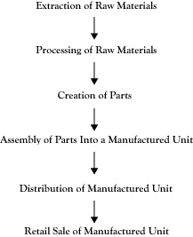

We noted earlier that many businesses sell goods or services that are intended to help other businesses in the creation of their goods and services. Many of the goods we consume as individuals are the result of a sequence of production operations that may involve several firms. If the final goods are traced backward through the intermediate goods that were acquired and utilized, we can usually envision the participant firms in a creation process as a network of production activities or a sequence of production stages.
For example, consider a loaf of bread purchased at a grocery store. The grocery store may purchase the loaf from a distributor of bakery products. The distributor likely purchased the loaf from a baking company. In order to produce the loaf of bread, the bakery would need flour and yeast, along with packaging material. These may be purchased from other businesses. The flour came from a grain grinding process that may have been done by a different business. The business that ground the grain would need grain that may have come from an agricultural cooperative, which in turn was the recipient of the grain from a farmer. In order to grow and harvest the grain, the farmer needs seed, tractors, and fuel, which are usually obtained from other sources.
Each of the firms or production operations that contributes to the creation of the final product can be considered as adding value to the resources they acquire in their completion of a stage of the creation process. Since the network of operations that account for the creation of a product can often be represented by a sequence of stages, the network is commonly called the value chainThe network of operations that account for the creation of a product. for the product.
Figure 5.1 "Generic Value Chain for a Manufactured Good" shows a generic value chain for a manufactured good. This value chain begins with the raw materials that eventually go into the product that must be acquired, possibly by mining (e.g., metal) or harvesting (e.g., wood). Next, the raw material is processed into a material that can be used to create parts in the next stage. Using these parts, the next stage of the value chain is the assembly of the product. Once assembled, the product must be distributed to the point of sale. In the final stage, a retailer sells the finished product to the consumer.
Business expansions are classified based on the relationship of the newly integrated activity to prior activities engaged in by the firm. If the new activity is in the same stage of that value chain or a similar value chain, the expansion is called horizontal integrationExpansion in which a business's new activity is in the same stage of its value chain or a similar value chain as its prior activities.. If the new activity is in the same value chain but at a different stage, the expansion is called vertical integrationExpansion in which a business's new activity is in the same value chain as its prior activities but at a different stage.. If the new activity is part of a quite different value chain, the new combined entity would be called a conglomerate mergerExpansion in which a business's new activity is part of a different value chain..
Figure 5.1 Generic Value Chain for a Manufactured Good
